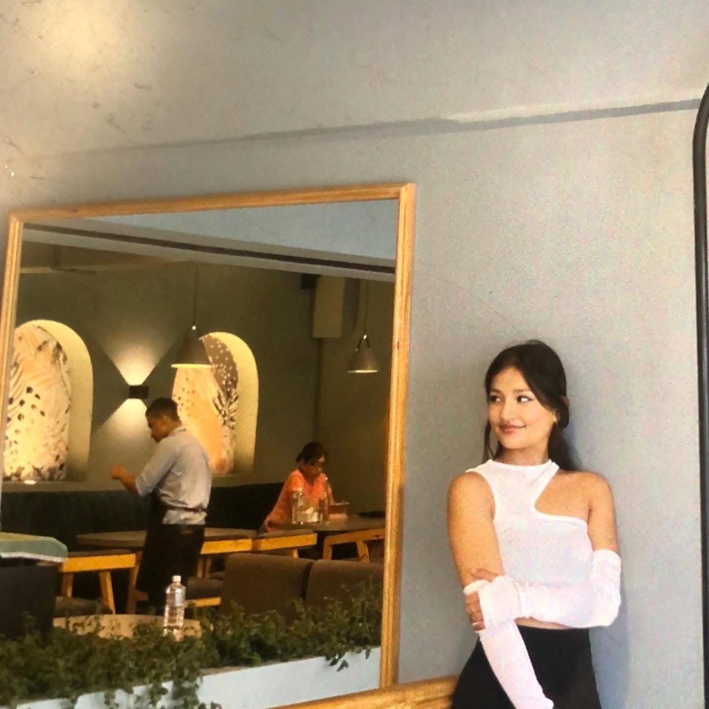

She's the YouTube and social media marketing expert behind RiseHand — real organic growth for musicians and YouTubers. Real fans. No bots.
I met Rubyy on Fiverr back around 2021. That's five years of watching somebody work before I ever put a title next to her name — and in those five years she never once gave me a reason to look elsewhere. She pushed Diabolique. She pushed Zooted Zone. She pushed Scorpion & Sapphires. Every time, the same thing: real promotion, real audience, no shortcuts.
Here's the thing about the music business — everybody sells you numbers. Streams, views, followers, all of it for sale, all of it fake if you don't know what you're looking at. Rubyy's whole business is the opposite of that. Google Ads, real targeting, real watch time, real ranking. The unsexy work that actually moves a record.
So the question behind this interview isn't "what does a PR assistant do." It's this: in an industry drowning in fake numbers, what does it look like when somebody refuses to play that game — and wins anyway?

Black: Tell me about the business. What is it, who is it for?
Rubyy: I help musicians and YouTubers grow organically via marketing and Google Ads. Real fans, no bots. My business is RiseHand, and I'm a YouTube and social media marketing expert.
Black: What does a client actually get — walk me through it.
Rubyy: YouTube promotion via Google Ads. The client gets real views, watch time, ranking, and fans. Not inflated numbers — actual listeners finding actual music.
"Real fans, no bots."
Black: Everybody says they love it. What keeps you in it on the hard days?
Rubyy: I love turning 0 views into real listeners. Helping artists build career. That's what keeps me in it — watching something go from nothing to somebody's favorite song.
Black: What have you built with CWI so far?
Rubyy: I have done many projects with CWI. Thankful they chose me. I'm part of Diabolique, Zooted Zone, Scorpion and Sapphires — I pushed these songs to the audience and they found a place in listeners' hearts.
Black: And outside CWI — who else have you worked with?
Rubyy: 500+ projects inside and outside marketplaces. Got lots of love from clients. Some names: Moe Taylor, Jesse Thompson, Evee Kay, Walker M James, Chip Vandiver, Prfromtheheart, Paula Slow and Gift of Destiny.
Black: Give me numbers. What do the receipts say?
Rubyy: 500+ artists and businessmen, 100M+ organic views, 5-star on Fiverr.
Black's note: these are Rubyy's figures from her intake — her count, her books. The Fiverr rating is checkable; the view counts are hers.
Black: What are you most proud of?
Rubyy: Built trusted brand for real organic growth with repeat clients. When my client says "thank you Rubyy for your service," my heart blasts. I always give my best to make clients happy.
"When my client says 'thank you Rubyy for your service,' my heart blasts."
Black: How did you and CWI first cross paths?
Rubyy: Met via Black Lansky on Fiverr first, in 2021 maybe. Then we exchange Instagram. I always try to give my best for Cumulative.
Black: Where are you headed?
Rubyy: My goal is to become a go-to marketing expert and help 5000+ artists grow. I want to make myself proud by making other people famous.
"I want to make myself proud by making other people famous."
Black: And with CWI — what does building together look like? Team, permanently?
Rubyy: I want to contribute as a marketing expert for CWI, help to grow organically, and join the team permanently if possible.
Five years. That's the part I keep coming back to. Not five years of promises — five years of delivered work, starting on Fiverr when nobody knew either of our names, through records that actually moved. Rubyy doesn't sell numbers; she builds the thing the numbers measure. There's a difference, and anybody who's been burned by the other kind knows exactly what I'm talking about.
Her goal is 5,000 artists. Mine is to make sure the people building with us get the flowers while they're still building. If you're an artist staring at zero views wondering if the music is the problem — it probably isn't. The problem is nobody real has heard it yet. That's the problem Rubyy solves.
As for permanently — the feeling's mutual. More on that soon.